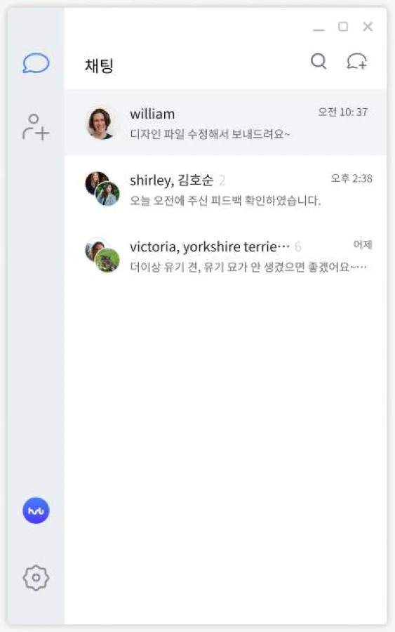
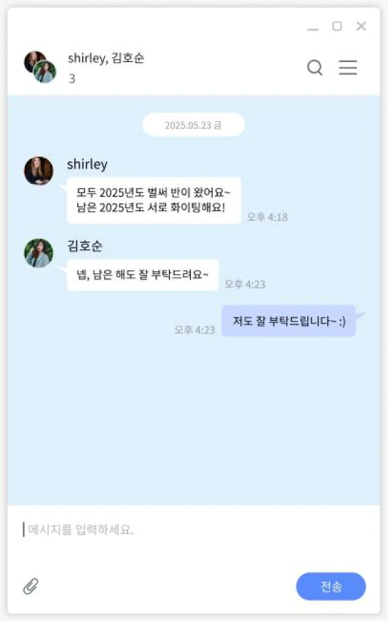
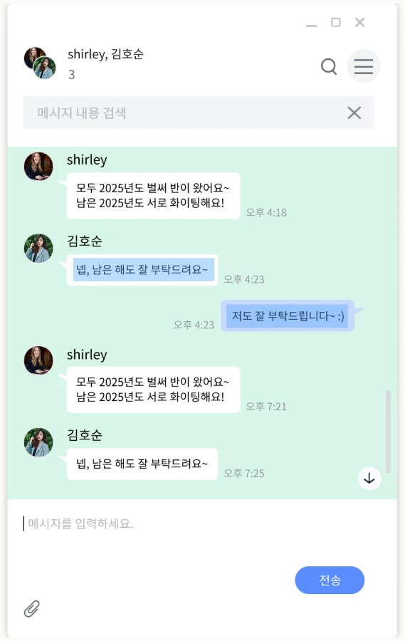
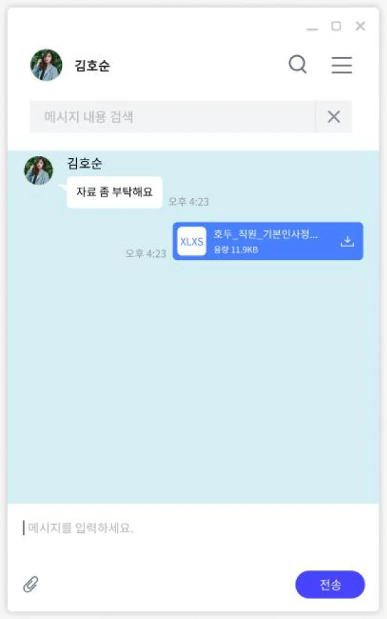
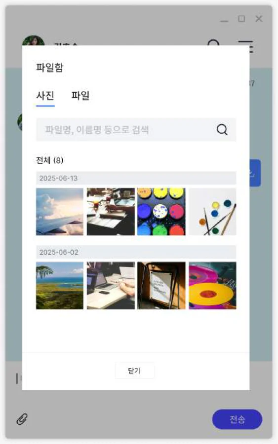

CASE STUDY 02 / HODU CHAT
호두 PC 채팅
웹·모바일의 채팅 경험을 PC 환경으로 확장
기존 웹·모바일 중심의 호두 채팅을 PC에서도 사용할 수 있도록 메신저 화면을 디자인했습니다. 채팅 목록과 대화, 메시지 검색·파일함 등 PC 환경에 필요한 화면을 구성했습니다.
01 완성 화면



보낸 사람과 메시지를 쉽게 구분
보낸 사람, 시간, 메시지 콘텐츠를 빠르게 구분하도록 시각적 위계를 구성했습니다.
스크롤 & 드래그 상태
긴 대화에서도 탐색 위치와 조작 상태를 인지할 수 있도록 PC 인터랙션을 고려했습니다.
그룹·1:1 대화의 화면 구조 통일
대화 유형이 달라도 동일한 사용 규칙을 유지하도록 기본 구조를 통일했습니다.
02 대화 내용과 공유 자료 찾기
대화창의 메시지 검색과 파일함 화면을 구성했습니다. 파일함은 사진과 파일을 탭으로 구분했습니다.


03 디자인을 웹 화면으로 구현
PC 메신저 화면을 디자인하고, 웹 버전의 HTML·CSS·jQuery 퍼블리싱을 담당했습니다.
윈도우
앱은 해당 디자인을 바탕으로 개발자가 구현했습니다.
사이트 접속 후 로그인, 회원가입을 눌러 확인할 수 있습니다.